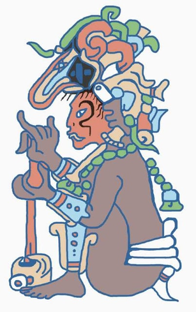

La cultura maya fue una civilización mesoamericana que se desarrolló en Guatemala y México (en los estados de Yucatán, Campeche, Quintana Roo, Chiapas y Tabasco) principalmente, así como en Belice, y la parte occidental de Honduras y El Salvador, abarcando más de 300 000 km².1 Destacó a lo largo de más de dos milenios en numerosos aspectos socioculturales como su escritura, uno de los pocos sistemas de escritura plenamente desarrollados del continente americano precolombino, su arte, la arquitectura, su mitología y sus notables sistemas de numeración, así como en astronomía y matemáticas.
Los elementos más destacados de esta cultura son: el uso posicional del cero (representado por una concha), un sistema complejo de escritura, el uso de una fecha era como hito para contabilizar los años, arquitectura con techos abovedados y decoraciones con estuco moldeado, así como la elaboración de estelas conmemorativas. Otros aspectos importantes son la elaboración de códices, bajorrelieves, pintura mural con el uso del “azul maya”, cerámica polícroma y un gran conocimiento de astronomía.
La cultura mayaDentro de los dioses mayas, Buluc Chabtan representaba la deidad de la guerra, destrucción y de los sacrificios humanos, también se le conocía como dios F, se le atribuyó el número once, que a veces se encontraba en el jeroglífico encima de la cabeza,El dios de la guerra se encargaba de apuñalar con su lanza a un grupo de ellos, para asegurar la muerte súbita de sus adversarios, la unión entre el dios de la guerra y el dios de la muerte simbolizaba la tradición del sacrificio de los prisioneros de guerra.
